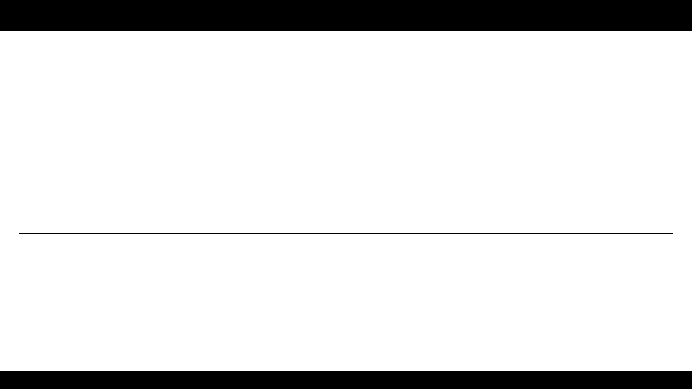

ENGR. VIOLDAN E. BAYOCOT
COMPUTER ORGANIZATION AND ARCHITECTURE
LABORATORY EXERCISE 03
Problem #03
Find the recurrence relations of the following recursion snippets, also find the running time.
Show your solution in a paper and scan your paper for upload
Problem #04
void tower_of_hanoi(int n, char src, char tgt, char aux) {
if (n == 1) {
printf("Move disk 1 from %c to %c\n", src, tgt);
return;
}
tower_of_hanoi(n - 1, src, aux, tgt);
printf("Move disk %d from %c to %c\n", n, src, tgt);
tower_of_hanoi(n - 1, aux, tgt, src);
}
int recursive_sum(int arr[], int left, int right) {
if (left == right) return arr[left];
int mid = (left + right) / 2;
return recursive_sum(arr, left, mid) + recursive_sum(arr, mid + 1, right);
}